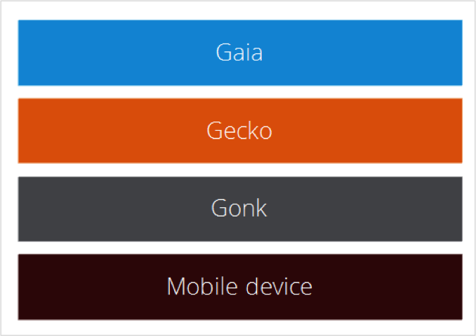

Introduction à Firefox OS
This slide deck is using the shower system - roll over the previews to see the notes and click any slide to go into presentation mode. Then use keys to navigate. Go fullscreen
Résumé:
Dans cette présentation nous allons présenter les concepts principaux de
Firefox OS.
Introduction à Firefox OS
Julien Wajsberg, Paris, 5 mai 2015, SFEIR
Le chemin vers les applications Web
Depuis 20 ans, les navigateurs évoluent
1991: Ce sont des liseuses de document
Aujourd'hui: Ce sont des « runtimes » applicatifs
Architecture
Un site web classique

Architecture
Un site web moderne

Architecture
Une application web

Architecture
Une application web « packagée »

Explication des différentes couches et leurs responsabilités. On va aussi parler de l'appli System.
Firefox OS et la sécurité
Introduction à lé sécurité de Firefox OS.
L'OS est construit avec des technologies Web ouvertes ou en cours de
standardisation.
L'accès à une fonctionnalité matérielle passe toujours par une
API
L'appel à cette API peut être autorisée ou non, au cas par cas
Différentes règles sont appliquées : accord de l'utilisateur,
accord implicite, application installée ou non
Une API non standardisée (donc expérimentale) va être limitée aux applications
installées
Parler de la pollution du Web.
Passer d'un site web à une application Firefox OS
Définie par manifest.webapp
{
"name": "My App",
"description": "My elevator pitch goes here",
"launch_path": "/",
"icons": { "128": "/img/icon-128.png" },
"developer": {
"name": "Your name or organization",
"url": "http://your-homepage-here.org"
}
}
App manifest
Gotcha: bien configurer le mime type et les expirations
Plusieurs types d'application…
Contenu Web - sans privilèges particuliers, mais permet
tout de même l'accès à certaines APIs (ex: géolocalisation)Applications hébergées - stockées et servies par un serveur web.
Facile à mettre à jour, mais a un accès limité aux APIs.Applications packagées - packagées dans des fichiers
ZIP, elles peuvent être installées depuis n'importe quel site.
Applications privilégiées - revues par la Marketplace,
packagées, et signées par une clé identifiant la Marketplace.Applications certifiers - ces applications font partie
du système et ne peuvent pas être installées autrement.
App permissions
Installer une application depuis le Web
var installapp = navigator.mozApps.install(manifestURL);
installapp.onsuccess = function(data) {
// L'app est installée
};
installapp.onerror = function() {
// L'app n'est pas installée, et l'erreur est:
// installapp.error.name
};
La même API permet aussi de contrôler la mise à jour d'une application.
Des APIs pour prendre
Des API ouvertes et standards pour accéder au materiel
Créées, proposées et discutées avec les autres contructeurs de navigateur via les organismes de standardisation.
Une bonne façon d'interagir avec le matériel via JavaScript
Asynchrone — Tous les accès sont gérés via un gestionnaire de succès et d'erreur expliquant ce qui s'est passé de manière claire
Chapoté par un modèle de sécurité à 3 niveaux permettant de donner
des pouvoirs plus ou moins étendus aux applications selon leur mode de distribution.
WebAPIs on MDN
The Web API effort of Mozilla is a way to make the whole hardware of mobile devices available in JavaScript in a secure, predictable and open way agreed with other browser makers and standards bodies.
Vibration API
Screen Orientation
Geolocation API
Pointer Lock API
Open WebApps
Network Information API
Battery Status API
Alarm API
Push Notifications API
WebFM API / FMRadio
WebPayment
IndexedDB
Ambient light sensor
Proximity sensor
Notification
etc
Using WebAPIs to make the web layer more capable
Hosted applications, meaning HTML5 apps you run on your own server, get the full functionality of HTML5 and additional API support shown here. All of these APIs are defined on the Mozilla Wiki and proposals to the standard bodies. Some of them have already been implemented in other other browsers, like the geolocation API. For now, however, only Firefox OS gives you all of them. These APIs bring much needed extra functionality to the HTML5 stack.
Gérer le cache et la latence: Application Cache, Storage, IndexedDB, Offline.
Accéder au materiel: Sensor/Device API (devicemotion, deviceorientation, etc.)
Sortir du navigateur: Notifications
Travailler avec le réseau: Web Socket
Optimiser vos applications: Page Visibility API
Une base de données de type « index »
Attention, ce n'est pas du SQL
On stocke des paires clé/valeur
Le moindre changement repose sur le concept de transaction
L'API est totalement asynchrone
IndexedDB on MDN
Les applications peuvent s'abonner à des messages système.
Le principe, c'est que l'application peut être lancée pour recevoir
ce message.
Beaucoup de fonctions sont implémentées avec ce principe: push
notifications, téléphonie, sms, activités
Firefox OS Simulator
The Firefox OS Simulator is an add-on for Firefox which simulates a phone on your computer. You can test the install process and buying and selling applications and you can send apps directly to a connected phone. You can also debug your applications directly from your computer including live CSS changes.
Vitesse de lancement
Listes infinies
Mises à jour
Applications packagées
"Janks" dans les animations et les rendus
Gestion de la mémoire dans une "one-page webapp"
Utilisation des multiples coeurs
Les Workers s'exécutent dans un thread séparé.
Ils n'ont pas un accès direct au DOM.
La communication se fait par messages asynchrones.
On n'a pas accès à toutes les APIs (mais accès à IndexedDB !).
Shared Workers: workers partagés pour une même origine.
Idée 1: utiliser les Shared Workers pour le modèle de
l'application et les contrôleurs.
La nouvelle manière de faire du cache offline dans le navigateur
Se pose en coupure des requêtes
Idée 2: conserver un cache de la page dynamique
Idée 3: gérer une mise à jour incrémentale d'une application
Idée 3bis: pouvoir faire de l'A/B testing
Pour rappel, les iframes insèrent un contexte de navigation à
l'intérieur d'une page Web.
Idée 4: utiliser des documents séparés pour les différentes vues,
utiliser les iframes pour les insérer.
Idée 5: supprimer une iframe permet de libérer la mémoire.
Idée 6: on peut facilement afficher des vues différemment sur des
devices différents.
Idée 7: dans la page maître, récupérer des données automatiquement
(mémoire, vitesse, etc) pour faire de la télémétrie
Julien Wajsberg
(avec des bouts de Jérémie Patonnier)
Introduction à Firefox OS
Photo by Yortw
 Julien Wajsberg, Paris, 5 mai 2015, SFEIR
Julien Wajsberg, Paris, 5 mai 2015, SFEIR